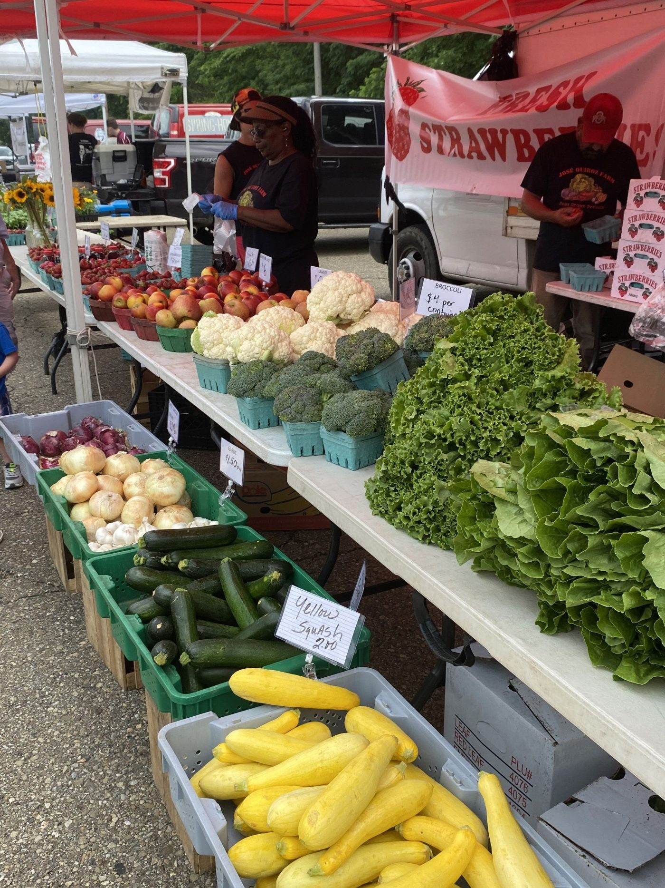
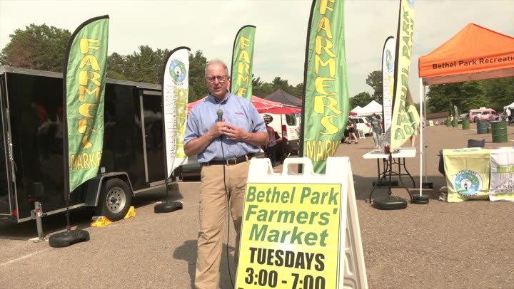

A concept site for the Bethel Park Farmers’ Market, built for the 20th season.
What we noticed
The dedicated domain still linked from old listings and press has lapsed and been picked up by a slots website. Anyone who finds that link, and it is still out there, gets sent to a casino instead of your vendor list and Tuesday schedule. For a market voted number one in the region, that is a rough first impression.
What a rebuild gives you
A weekly vendor lineup and theme, updated in minutes, so shoppers know who to expect before they drive over.
Hours, parking near the ice rink, SNAP/EBT and FAM match, and a map, all above the fold.
A market domain that leads to you, not a gambling site, and looks right on the phone people plan with.
Real photos, real place

A clean, safe website for the Bethel Park Farmers’ Market.